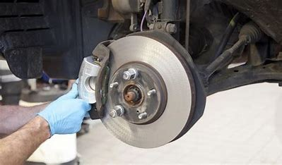
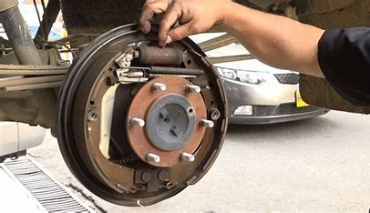
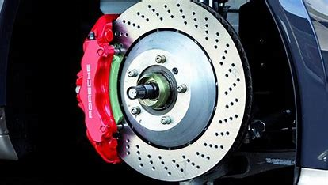

SERVICIO AUTOMOTRIZ TORO MOTOR GARAGE
Sistema de Frenos



Los frenos ayudan a disminuir la velocidad y a detener el vehículo, por eso, tiene que funcionar con exactitud, y
nosotros, como conductores debemos velar de su correcto funcionamiento, preocuparnos de realizar un
mantenimiento adecuado de forma regular de todas sus piezas y aprender a adelantarnos a los posibles problemas
que puedan surgirnos con el tiempo.
Detectar alguna de las siguientes señales podría ayudarnos a evitar accidentes y al mismo tiempo, nos permitirán conocer el estado en el que se encuentra nuestro vehículo. Es importante que al momento de presentarse cualquiera de estas situaciones, acudamos a nuestro taller
- Vibraciones anormales
Esta es una de las señales más frecuentes que se presentan cuando el vehículo necesita, por ejemplo, un
cambio de pastillas, debido a una deformación causada por un desgaste irregular. Muchas veces, esto puede
suceder por no cambiar a tiempo las pastillas, ocasionando daños en el disco de freno
- Ruidos al frenar
Es importante estar atentos a esta señal, puesto que, podría ser indicadora de un daño en los discos de los
frenos. Este ruido se puede presentar probablemente debido al desgaste de las pastillas de freno.
- Cambios de dirección
¿Frenas y sientes que el carro “se va para un lado” y no se mantiene derecho? Puede deberse a un desgaste
importante en el sistema de frenos y resulta ser una señal muy peligrosa, teniendo en cuenta que esto podría
ocasionar la pérdida del control del vehículo al momento de frenar, causando un accidente.
- Demora en la frenada
Puede suceder que al momento de frenar comencemos a notar que debemos pisar a fondo para que el vehículo se
detenga en el momento que queremos. Esto, puede deberse al desgaste de diferentes piezas que conforman el
conjunto de frenos.
- Pedal del freno duro
Si al momento de pisar el freno, sentimos que el pedal está más duro de lo normal y la frenada no es
eficiente, esto podría presentarse por una avería en el sistema que se encarga de multiplicar la fuerza
ejercida sobre el pedal para un frenado más efectivo.
- Pedal del freno esponjoso
Si por el contrario, al frenar se siente que el pedal está “chicludo” o “esponjoso” cuando se ejerce fuerza
sobre el, puede ser debido a varias causas, entre ellas las más destacables son que el líquido de frenos ha
perdido su efectividad por el paso del tiempo o que ha entrado aire al sistema donde éste actúa. Cabe
destacar que la humedad y el clima frío son factores que también suelen involucrarse en este tipo de
fenómenos, ya que podrían generarse microburbujas entre el líquido de frenos debido a la humedad o bajas
temperaturas del ambiente exterior. Cualquiera que sea el caso, es importante que un experto en la materia
realice una “purga” en el sistema y se reemplace el líquido de frenos viejo